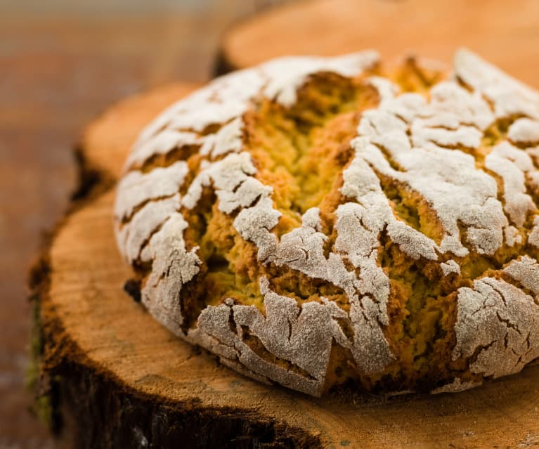

Broa de Milho

Description
An exciting, delicious, and beautiful bread originates from northern Portugal, where corn is a vital crop.
The cornflour is the magic that brings the yellow crumb and the beautiful crackled crust.
- 300 gram wholegrain corn flour
- 100 gram bread flour
- 300 gram water
- 8 gram fine salt
- 100 gram sourdough starter
- Rice flour to sprinkle on the bread or use wheat flour
Steps
- Put the cornflour in a heat-proof bowl.
- Boil water in an electric boiler.
- Pour the water over the cornflour and stir until all the flour is hydrated. Let it cool to room temperature for about one hour.
- Add bread flour, salt, and sourdough starter, and knead the dough by hand until it forms a bread dough.
- Form the dough into a boule and press it down slightly. Make sure the ball has a smooth surface.
- Spray the top of the dough with a water mister and sprinkle with rice flour. Use your hands to spread the flour evenly.
- Let the dough proof on the kitchen counter under a dishcloth. At least 3½ hours, but you can leave it until the following day.
- Heat the oven to 260°C/500°F with a dutch oven inside.
- Bake for 20 minutes with the loaf inside the dutch oven, then take the lid off the dutch oven and turn the oven down to 230°C/450°F.
- Keep baking until the bread is 99°C/210°F inside. It took about 25 minutes in my oven.
- Take the bread out of the oven and let it cool on a wire rack. It takes a couple of hours.
- Enjoy a piece with butter and a great selection of cheese or some fantastic olives.